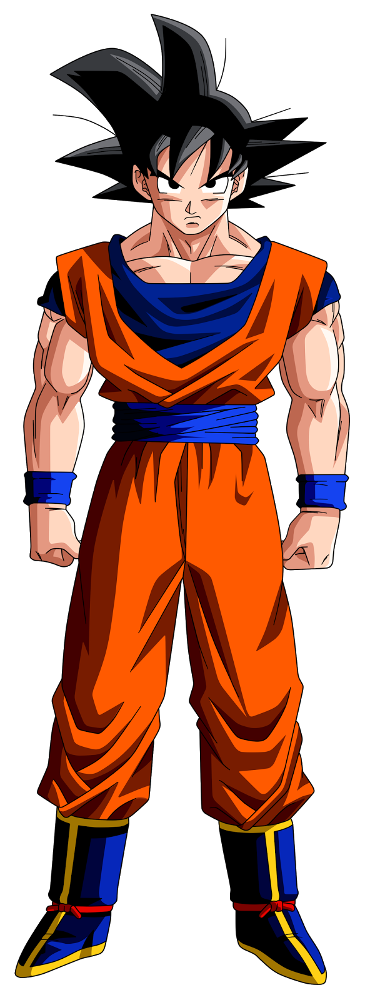
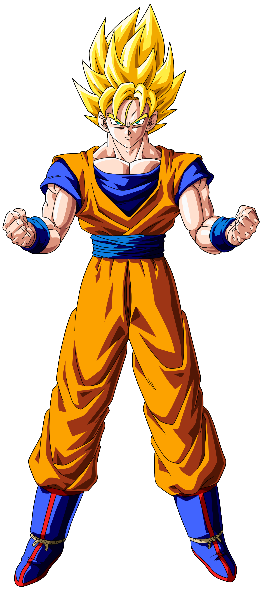
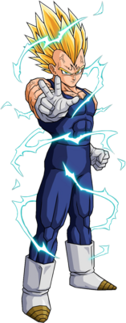
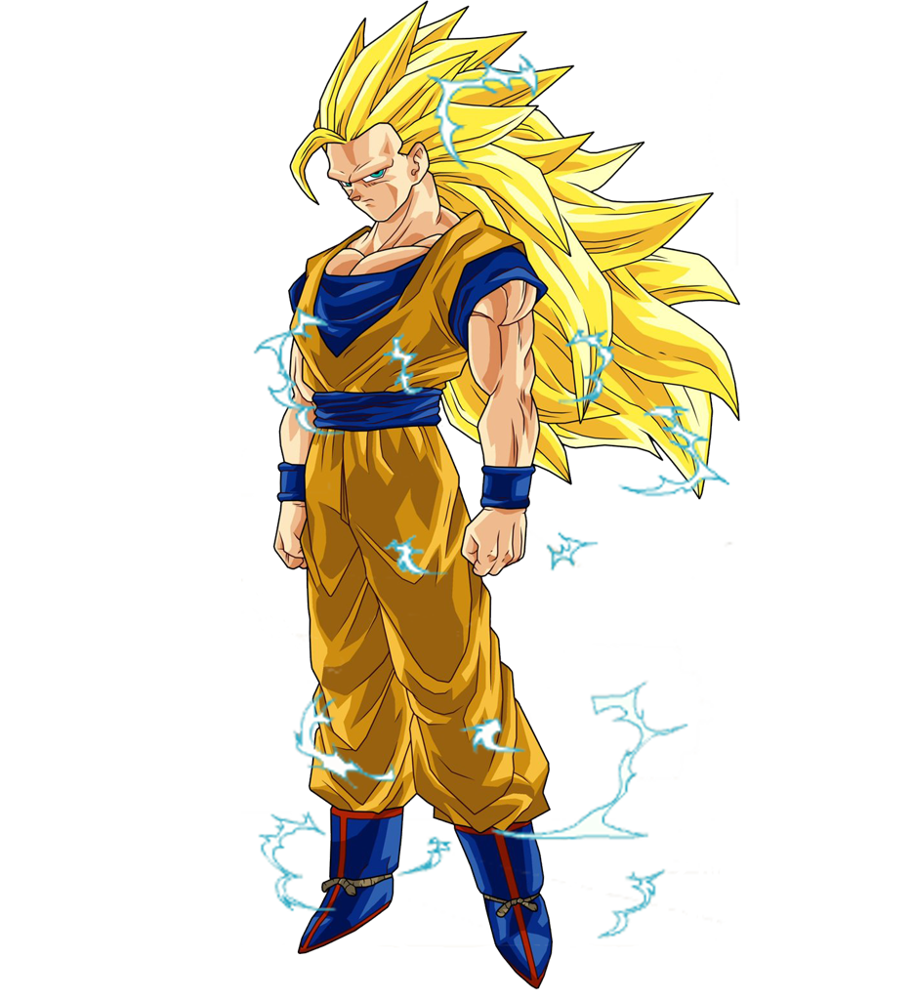

Dragon Ball Z
No anime japonês
Dragon Ball Z
, os personagens da raça Sayajin podem se transformar, ficando mais fortes,como ilustrado a seguir:

Forma base

Super Sayajin

Super Sayajin 2

Super Sayajin 3